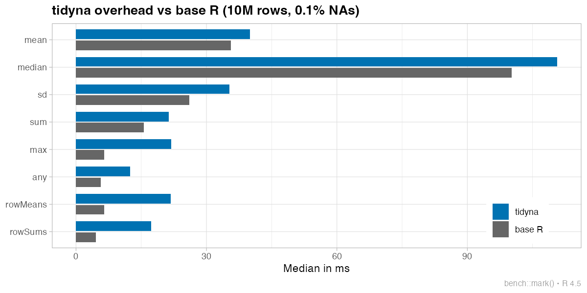

Tired of littering your code with na.rm = TRUE?
tidyna masks common R functions and warns you when NAs are removed. It handles some special cases. The table() default is set to useNA = "ifany".
Installation
Install from CRAN:
install.packages("tidyna")Or install the development version from GitHub:
# install.packages("pak")
pak::pak("statzhero/tidyna")Functions
-
Summary:
mean,weighted.mean,sum,prod,sd,var,median,quantile -
Extrema:
min,max,pmin,pmax,range -
Logical:
any,all -
Row-wise:
rowSums,rowMeans -
Correlation:
cor -
Table:
table
Special cases
All-NA input is configurable: By default, tidyna throws an error when all values are NA to prevent misleading values like Inf, NaN, or 0:
base::sum(c(NA, NA), na.rm = TRUE)
#> [1] 0
sum(c(NA, NA))
#> Error in `sum()`:
#> ! All values are NA; check if something went wrong.You can change this behavior with the all_na argument or the tidyna.all_na option:
# Return base R behavior (NaN, Inf, 0, etc.)
sum(c(NA, NA), all_na = "base")
#> [1] 0
# Always return NA
sum(c(NA, NA), all_na = "na")
#> [1] NArowSums/rowMeans return NA for all-NA rows, but error if the entire matrix is NA. Also configurable via all_na.
pmax/pmin return NA for positions where all inputs are NA (with a warning), but error if every position is all-NA. Also configurable via all_na.
cor defaults to use = "pairwise.complete.obs" instead of erroring on NAs.
table defaults to useNA = "ifany", showing NA counts when present rather than silently dropping them.
Performance
There is no free lunch. The tidyna package adds some overhead:

For most functions like mean() the overhead is negligible (1.1x). But rowMeans() and rowSums() require an extra pass to detect all-NA rows, so there is a substantial loss (3-4x).
I’m still working on whether the memory allocation needs to be addressed.